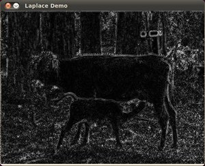

Laplace Operator
Goal
In this tutorial you will learn how to:
- Use the OpenCV function cv::Laplacian to implement a discrete analog of the Laplacian operator.
Theory
In the previous tutorial we learned how to use the Sobel Operator. It was based on the fact that in the edge area, the pixel intensity shows a “jump” or a high variation of intensity. Getting the first derivative of the intensity, we observed that an edge is characterized by a maximum, as it can be seen in the figure:

And…what happens if we take the second derivative?

You can observe that the second derivative is zero! So, we can also use this criterion to attempt to detect edges in an image. However, note that zeros will not only appear in edges (they can actually appear in other meaningless locations); this can be solved by applying filtering where needed.
Laplacian Operator
From the explanation above, we deduce that the second derivative can be used to detect edges. Since images are “*2D*”, we would need to take the derivative in both dimensions. Here, the Laplacian operator comes handy.
The Laplacian operator is defined by:
\[Laplace(f) = \dfrac{\partial^{2} f}{\partial x^{2}} + \dfrac{\partial^{2} f}{\partial y^{2}}\]The Laplacian operator is implemented in OpenCV by the function cv::Laplacian. In fact, since the Laplacian uses the gradient of images, it calls internally the Sobel operator to perform its computation.
Code
What does this program do?
- Loads an image
- Remove noise by applying a Gaussian blur and then convert the original image to grayscale
- Applies a Laplacian operator to the grayscale image and stores the output image
- Display the result in a window
The tutorial code’s is shown lines below. You can also download it from here
#include "opencv2/imgproc.hpp" #include "opencv2/imgcodecs.hpp" #include "opencv2/highgui.hpp" using namespace cv; int main( int, char** argv ) { Mat src, src_gray, dst; int kernel_size = 3; int scale = 1; int delta = 0; int ddepth = CV_16S; const char* window_name = "Laplace Demo"; src = imread( argv[1], IMREAD_COLOR ); // Load an image if( src.empty() ) { return -1; } GaussianBlur( src, src, Size(3,3), 0, 0, BORDER_DEFAULT ); cvtColor( src, src_gray, COLOR_BGR2GRAY ); // Convert the image to grayscale Mat abs_dst; Laplacian( src_gray, dst, ddepth, kernel_size, scale, delta, BORDER_DEFAULT ); convertScaleAbs( dst, abs_dst ); imshow( window_name, abs_dst ); waitKey(0); return 0; }
Explanation
Create some needed variables:
Mat src, src_gray, dst; int kernel_size = 3; int scale = 1; int delta = 0; int ddepth = CV_16S; const char* window_name = "Laplace Demo";
Loads the source image:
src = imread( argv[1], IMREAD_COLOR ); // Load an image if( src.empty() ) { return -1; }
Apply a Gaussian blur to reduce noise:
GaussianBlur( src, src, Size(3,3), 0, 0, BORDER_DEFAULT );
Convert the image to grayscale using cv::cvtColor
cvtColor( src, src_gray, COLOR_BGR2GRAY ); // Convert the image to grayscale
Apply the Laplacian operator to the grayscale image:
Laplacian( src_gray, dst, ddepth, kernel_size, scale, delta, BORDER_DEFAULT );
where the arguments are:
- src_gray : The input image.
- dst : Destination (output) image
- ddepth : Depth of the destination image. Since our input is CV_8U we define ddepth = CV_16S to avoid overflow
- kernel_size : The kernel size of the Sobel operator to be applied internally. We use 3 in this example.
- scale, delta and BORDER_DEFAULT : We leave them as default values.
Convert the output from the Laplacian operator to a CV_8U image:
convertScaleAbs( dst, abs_dst );
Display the result in a window:
imshow( window_name, abs_dst ); waitKey(0);
Results
After compiling the code above, we can run it giving as argument the path to an image. For example, using as an input:

We obtain the following result. Notice how the trees and the silhouette of the cow are approximately well defined (except in areas in which the intensity are very similar, i.e. around the cow’s head). Also, note that the roof of the house behind the trees (right side) is notoriously marked. This is due to the fact that the contrast is higher in that region.
